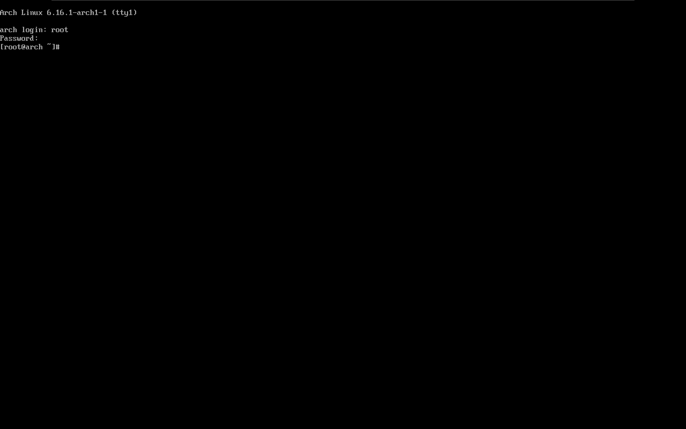

Arch 虚拟机安装小结
暑假闲来无事整了台 Arch 虚拟机玩玩，刚好记录一下安装的流程以及可能出现的问题。安装步骤力求简单直接，即省略了大部分可有可无的步骤，只保留必要步骤。
注：在安装 Arch 前，请确保您有基础的 Linux 使用经验和知识，并且熟悉命令行操作。
物理机配置如下：
- 宿主机 Windows 11 专业版 24H2
- 使用 VMware Workstation 17 Pro
- 虚拟机 iso 为 archlinux-2025.07.01-x86_64
- CPU 为 Intel® Core™ Ultra 9 185H (22) @ 5.10 GHz
- GPU 为 NVIDIA GeForce RTX 4060 Laptop GPU
VMware 虚拟机创建流程
在 VMware 新建一台虚拟机 > 选择自定义（高级）> 使用 iso 安装 > 内核版本选择其他 Linux 6.x 内核 64 位 > 处理器数量和内存根据物理机配置而定 > 网络使用 NAT 连接 > SCSI 选择 LSI Logic > 虚拟磁盘类型根据物理机的磁盘类型选择，固态硬盘（SSD）选择 NVMe，其他硬盘优先选择 SCSI > 选择创建新虚拟磁盘（即 .vmdk） > 根据物理机的磁盘空间大小选择虚拟磁盘大小，选择将虚拟磁盘存储为单个文件（可提高磁盘读写性能） > 接着完成虚拟机创建。
注：一般建议将虚拟机的处理器内核总数设置为物理机线程数的一半，如果物理机线程较多，可以按将虚拟机的处理器内核总数设置为物理机线程数的 2/3 左右，这样可以让虚拟机有更好的性能。
注：对于 I/O 控制器类型，ChatGPT 给出的建议是：通用/兼容性优先：选 LSI Logic，模拟 LSI Logic Parallel (并行 SCSI 控制器)；新系统 + 大容量磁盘（> 2TB）：选 LSI Logic SAS，模拟串行连接 SCSI (Serial Attached SCSI, SAS) 控制器；高性能需求（数据库/IO密集型）：选准虚拟化 SCSI (PVSCSI)，这是 VMware 自己的 paravirtualized SCSI 控制器；非常老的操作系统：才考虑 BusLogic。
安装前的准备
在新创建的虚拟机窗口，打开 编辑虚拟机设置，选择 处理器，勾选 虚拟化 Intel VT-x/EPT 或 AMD-V/RVI 和 虚拟化 IOMMU，选择 显示，勾选 加速 3D 图形，将图形内存拉满，在 选项中，选择 高级，将 抓取的输入内容调整为 高，将 收集调试信息 调整为 无，并且勾选 禁用内存页面修整。根据需求选择 BIOS 或者 UEFI 启动。
特别注意：在
固件类型中，如果选择使用 BIOS 启动，必须使用 MBR 分区表进行磁盘分区，如果选择使用 UEFI 启动，必须使用 GPT 分区表进行磁盘分区，否则会出现系统无法启动的问题，原因是 BIOS 无法识别 GPT 分区表的启动信息，UEFI 无法找到 MBR 分区表的 EFI 系统分区。由于 UEFI + GPT 更为现代，因此大多数情况下都选择使用 UEFI + GPT 安装。
特别注意：在使用 VMware 虚拟机前，若要避免出现一些奇怪的问题（如输入卡顿等），请务必确认关闭 Windows 的 Hyper-V 虚拟层，流程如下：
重要提示：这些步骤可能会因 Windows 版本而异。
- 打开控制面板。
- 依次选择 程序 > 程序和功能。
- 选择 启用或关闭 Windows 功能。
- 取消选择 Hyper-V。
- 重启计算机。
开始安装 Arch
可参考 Arch Linux 的官方安装指南。
开机，调整窗口大小，按 Ctrl+Alt+Enter 可进入全屏模式，按 Ctrl+Alt 可移出光标聚焦，正常启动显示如下安装画面。
OK! 接下来开始安装吧~
善用 Tab 键可减少错误输入。
先确认使用 UEFI 模式启动：
1 | ls /sys/firmware/efi/efivars |
如果目录不存在，则是以 BIOS 启动。
联网
显示可用网络：
1 | ip link |
选择对应网络名称（这里为 ens33），然后使用 dhcpcd（DHCP Client Daemon）自动获取 ip 地址：
1 | dhcpcd ens33 |
然后 ping 一下 archlinux.org 看看网络连通性（或者 baidu.com 也行）：
1 | ping archlinux.org |
一切正常的话如下图：
磁盘分区、格式化与挂载
磁盘的使用必须经过：分区、格式化与挂载，分别常用的命令为 gdisk，mkfs，mount 三个命令。
分区
首先查看磁盘：
1 | lsblk |
本记录使用一个 50G 的 NVMe 磁盘作为演示，能看到系统有一个 50G 的 nvme0n1 还没有分区，我们对它进行分区。
GPT 分区表建议使用 gdisk 进行分区，MBR 分区表建议使用 fdisk 进行分区，或者两者都可以使用通用的 parted 进行分区，这里使用 gdisk 进行分区：
1 | gdisk /dev/nvme0n1 |
可以使用 ? 查看 gdisk 相关命令。
Arch Wiki 建议 EFI 分区至少为 1GB，swap 分区至少为 4GB。虽然现在的磁盘读写性能已经使 swap 没有什么存在的必要了，但是我们依然按照 Arch Wiki 的建议来进行分区。
使用 n 新建一个 EFI 分区，大小为 1GB：
在 Last sector 后使用 +1G 即可分配 1G 容量；ef00 是 EFI 文件系统的代码；使用 p 可以打印当前已存在的分区，确认无误。
使用 n 新建一个 swap 分区，大小为 4GB：
8200 是 Linux swap 代码。
使用 n 新建一个 Linux 文件系统分区，大小为剩下的所有容量：
8300 是 Linux filesystem 代码。
按下 w 保存更改并退出 gdisk。
再次使用 lsblk 查看分区情况，确认无误后可进行格式化。
1 | lsblk |
格式化
使用 mkfs 进行格式化：
1 | mkfs.fat -F32 /dev/nvme0n1p1 |
当然你也可以选择自己喜欢的文件系统 (xfs, ext3, …)，这里选择 ext4 作为演示。
挂载文件系统
一般情况下，进行挂载前，最好先确定几件事：
- 单一文件系统不应该被重复挂载在不同的挂载点（目录）中；
- 单一目录不应该重复挂载多个文件系统；
- 要作为挂载点的目录，理论上应该都是空目录才行。
参考：https://linux.vbird.org/linux_basic/centos7/0230filesystem.php#mount
使用 mount 挂载文件系统，使用 swapon 开启 swap：
1 | mount --mkdir /dev/nvme0n1p1 /mnt/efi |
使用 lsblk 确认文件系统已经被正确挂载。
注：示例的 /efi 文件夹命名并不遵守 FHS （Filesystem Hierarchy Standard），关于 EFI 文件系统到底是挂载在 /boot/efi 更合理还是挂载在 /efi 更合理，一直有争议，目前尚未解决。
参考：
这是安装 Linux 最重要的步骤之一，请务必确认正确操作！
选择镜像
使用 iso 自带的 reflector 自动选择最快的镜像：
1 | # 备份 |
虽然有很多镜像连接失败，但是实测使用 reflector 后下载速度明显提高，如果觉得下载速度太慢可以尝试替换成清华源，或者多试几次。
安装系统和工具
使用 pacstrap 安装系统和工具：
1 | pacstrap /mnt base linux linux-firmware net-tools networkmanager openssh vi vim |
安装 vi 是为了使用 visudo。
创建 File System Table (fstab)
系统挂载的一些限制：
- 根目录 / 是必须挂载的，而且一定要先于其他 mount point 被挂载进来；
- 其他 mount point 必须为已建立的目录，可任意指定，但一定要遵守必须的系统目录架构原则 (FHS) ；
- 所有 mount point 在同一时间内，只能挂载一次；
- 所有 partition 在同一时间内，只能挂载一次；
- 如若进行卸载，您必须先将工作目录移到 mount point （及其子目录）之外。
参考：
/etc/fstab 就是将我们利用 mount 指令进行挂载时，将所有的选项与参数写入到这个文档中。开机时，操作系统根据这个文件里的记录，自动挂载记录的文件系统到对应目录下。
1 | genfstab -U /mnt >> /mnt/etc/fstab |
-U 指记录分区的 UUID（Universally Unique IDentifier），因为每块磁盘每个分区的 UUID 是唯一的，因此比较推荐使用 UUID 来记录。
使用以下命令验证 fstab 的正确性：
1 | cat /mnt/etc/fstab |
有时候 genfstab 会莫名其妙少掉几个文件系统或者根本不工作，这时候把所有文件系统重新挂载一遍然后再次使用 genfstab 的上述命令，进入 vim 手动删除多余的记录即可。确保根目录 / 最先挂载。
1 | vim /mnt/etc/fstab |
注：需要知道如何使用 vim 进行编辑和保存退出。
Arch 系统配置
进入新系统：
1 | arch-chroot /mnt |
注：进入前请再次确认文件系统已被正确挂载。
设置系统语言
1 | vim /etc/locale.gen |
使用 vim 的搜索功能，找到 en_US.UTF-8 UFT-8 或者 zh_CN.UTF-8 UTF-8 （根据个人喜好），取消注释，这里选择 en_US.UTF-8：
保存退出，生成语言环境。
1 | locale-gen |
设置 LANG 变量。
1 | echo "LANG=en_US.UTF-8" > /etc/locale.conf |
设置时区
创建到上海时区的软连接：
1 | ln -sf /usr/share/zoneinfo/Asia/Shanghai /etc/localtime |
注：善用 Tab
将硬件时钟设置为 UTC：
1 | hwclock --systohc --utc |
设置主机名
1 | echo “arch“ > /etc/hostname |
arch 可替换成个人喜好的主机名。
设置 root 密码
1 | passwd |
安装 GRUB 引导程序
1 | pacman -S grub efibootmgr |
重新启动
1 | exit |
成功安装 Arch
重启后 GRUB 应能正确识别 EFI 并且加载 Arch Linux，使用 root 账户登录后显示如下界面：

联网
使用 systemctl 启动 NetworkManager：
1 | systemctl start NetworkManager |
创建用户
1 | useradd -mg users -G wheel,storage,power -s /bin/bash your_new_user |
your_new_user 可以替换。
chage -d 0 使用户密码过期，以便登录时重置密码，不过虚拟机使用 sddm 登录时出现了一些输入问题，因此此处可选择不执行，或者通过 Ctrl+Alt+F1 等调出 tty 来登录并修改密码。
1 | pacman -S sudo |
找到 %wheel ALL=(ALL:ALL) ALL 取消注释。
参考：https://linux.vbird.org/linux_basic/centos7/0410accountmanager.php#users
图形界面安装
注：可安装并使用
reflector提高下载速度，见前文。
示例安装 KDE Plasma 6 桌面，可根据喜好选择安装其他桌面（GNOME，Xfce，Hyprland…）
安装驱动
1 | pacman -S xf86-video-intel |
安装 Xorg
1 | pacman -S xorg |
注：如果使用 KDE 或 GNOME 桌面，其本身已支持 Wayland，不需要单独安装 Xorg。
安装 sddm
1 | pacman -S sddm |
安装 Plasma 桌面
1 | pacman -S plasma konsole |
注：
kde-applications为 KDE 桌面的全套应用，由于太多用不到，故只安装桌面和终端。
安装 fcitx5 输入法
1 | pacman -S fcitx5 fcitx5-configtool fcitx5-chinese-addons fcitx5-qt fcitx5-gtk |
安装文泉驿中文字体
1 | pacman -S wqy-microhei |
重启
1 | reboot |
重启后应该正常进入 sddm 界面：
输入密码后进入 KDE Plasma 桌面：

安装后的常见问题
主机共享剪贴板
安装 open-vm-tools：
1 | sudo pacman -S open-vm-tools |
重启，然后就可以用啦~
分辨率
鼠标右键进入 Display Configuration，调整分辨率和缩放，使界面清晰。
网络代理
VMware 提供的主机地址为 192.168.245.1 ，设置即可。
声音
找到 konsole，安装 firefox 浏览器：
1 | sudo pacman -S firefox |
随便打开一个视频，发现虚拟机十分卡顿，并且没有声音：
解决方案：需要按如下方式编辑 WirePlumber 配置：
1 | mkdir -p ~/.config/wireplumber/wireplumber.conf.d/ |
然后在编辑器中创建 ~/.config/wireplumber/wireplumber.conf.d/50-alsa-config.conf 并添加：
1 | monitor.alsa.rules = [ |
之后，通过 systemctl --user restart wireplumber pipewire pipewire-pulse 重新启动所有服务。
参考：
找不到主机共享文件夹
大部分原因是开机后共享文件夹没有自动挂载，导致 /mnt/hgfs 下找不到共享文件夹。
解决方案：将共享文件夹写入 fstab 使其开机自动挂载：
1 | echo '.host:/ /mnt/hgfs fuse.vmhgfs-fuse allow_other,defaults 0 0' | sudo tee -a /etc/fstab |
重启即可。
或者临时挂载：
1 | sudo mount -t fuse.vmhgfs-fuse .host:/ /mnt/hgfs -o allow_other |
虚拟机总是使用效率核（E-core）
找到 VMware 的可执行文件或快捷方式，打开属性的 兼容性 选项，勾选 以管理员身份运行此程序，可避免虚拟机不使用 P-core，即性能核。
写在最后
安装 Arch 不仅是个熟悉 Linux 的过程，也是个体力活… Arch 是介于 Ubuntu 这种开箱即用的发行版和 Gentoo 这种全部自己动手配置的发行版之间的一种平衡，说实话对我来说已经够用了。